NASA Space Apps Challenge — Participante
2025
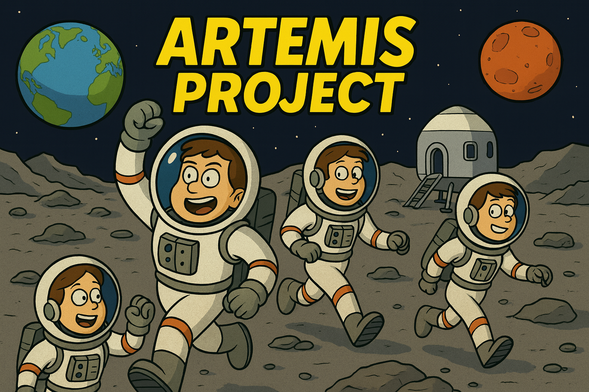
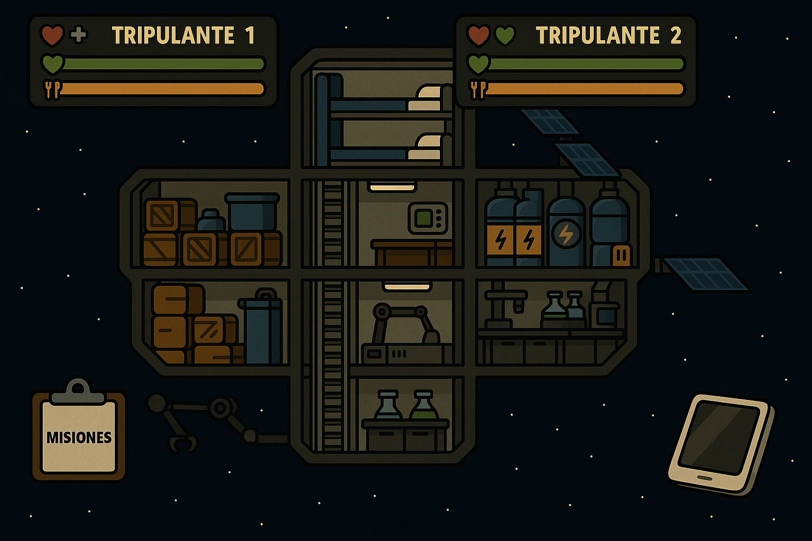
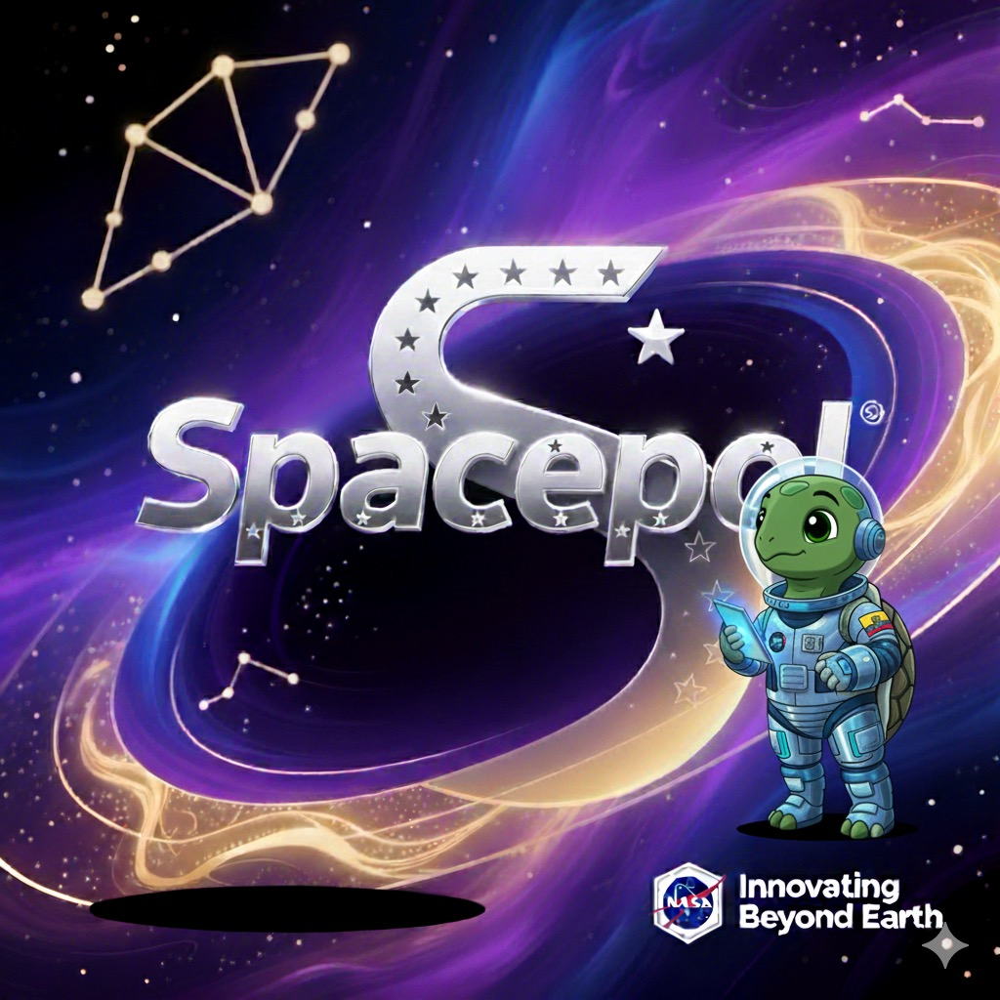
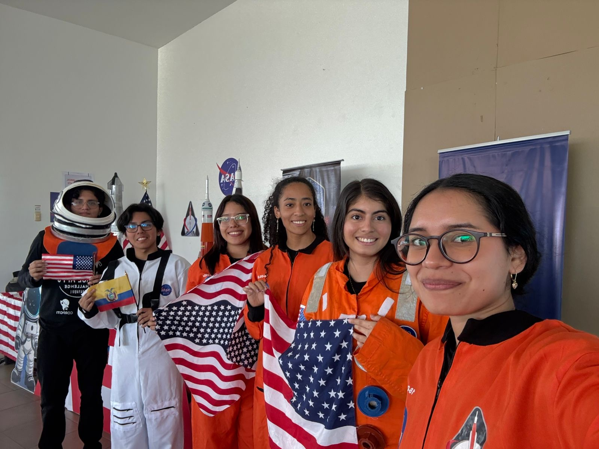
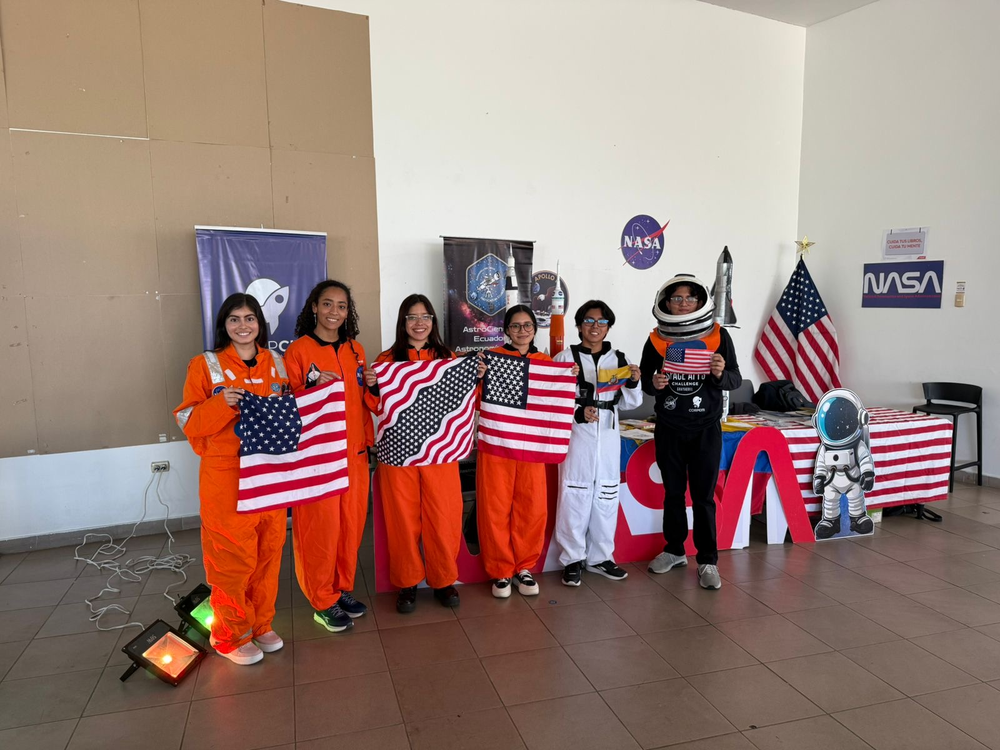
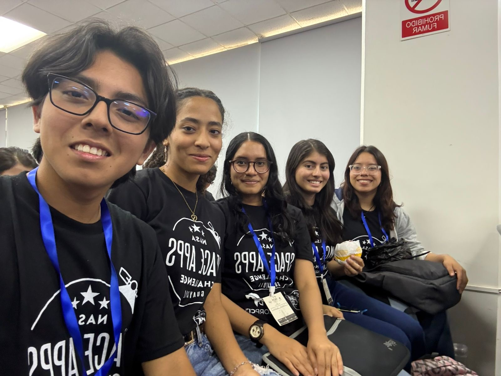
- Colaboración en equipo multidisciplinario para desarrollar soluciones tecnológicas a problemas globales.
- Desarrollo en equipo de un juego interactivo como solución al reto “Your Home in Space: The Habitat Layout Creator”.
- Aprendizaje práctico en programación, análisis de datos y desarrollo de ideas innovadoras.
🔗 Ver Proyecto Artemis Project
 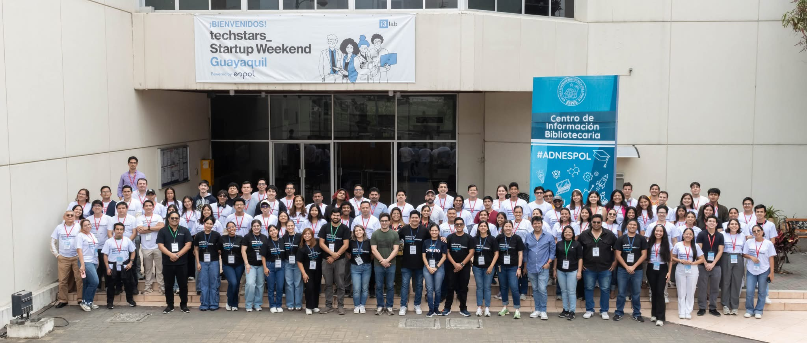
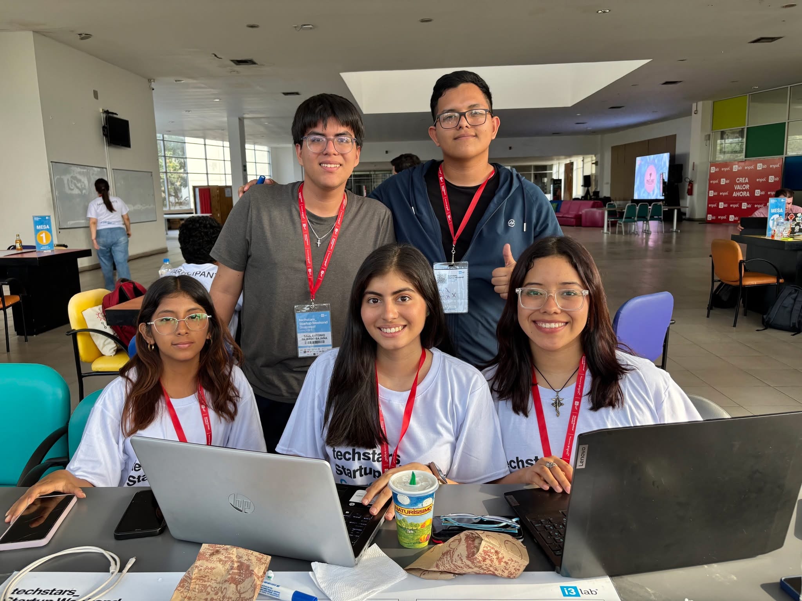
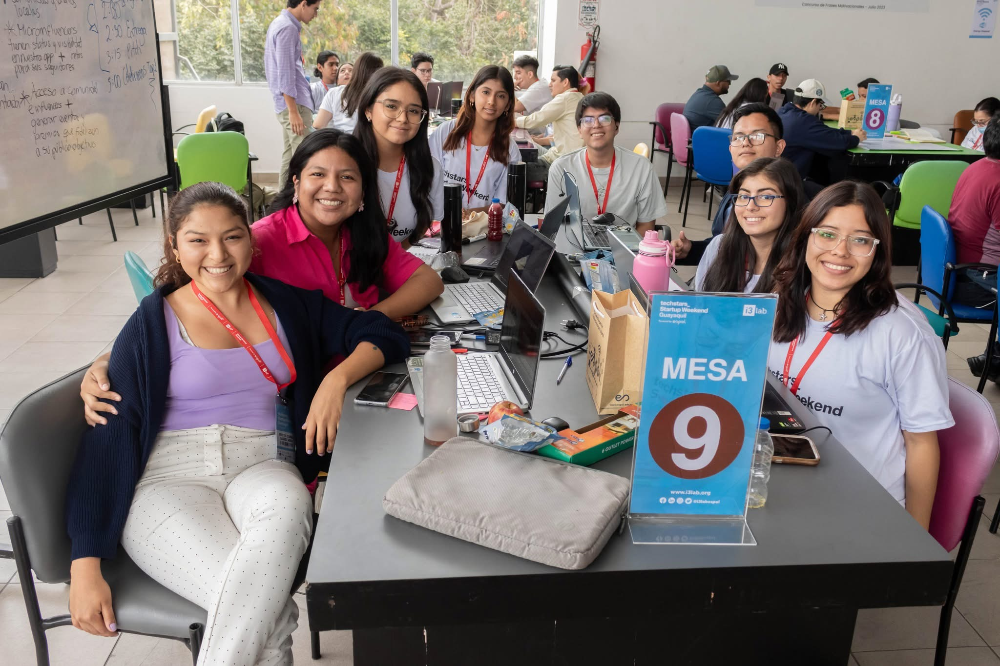
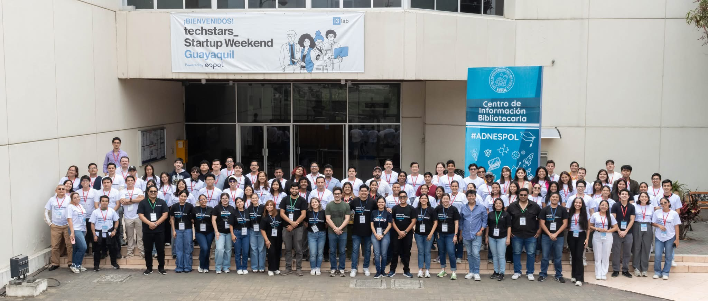
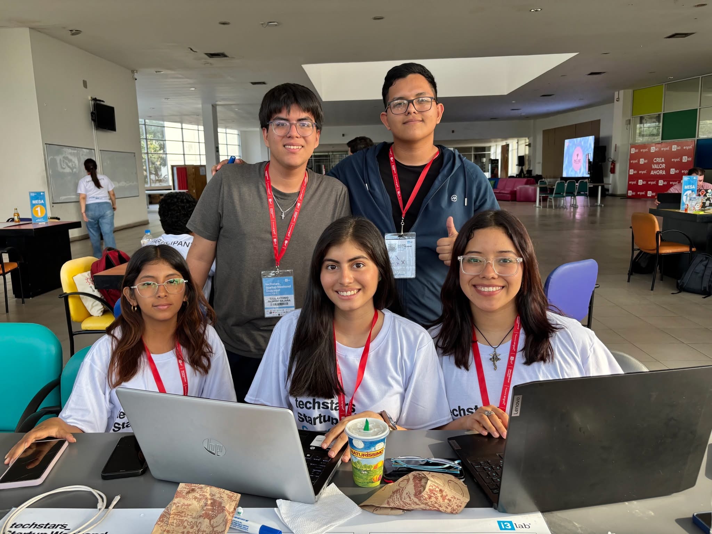
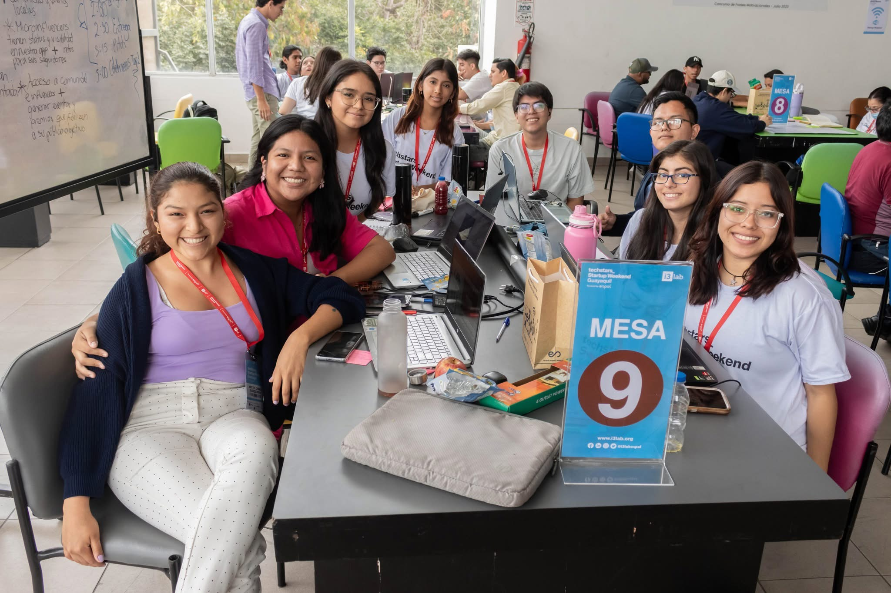